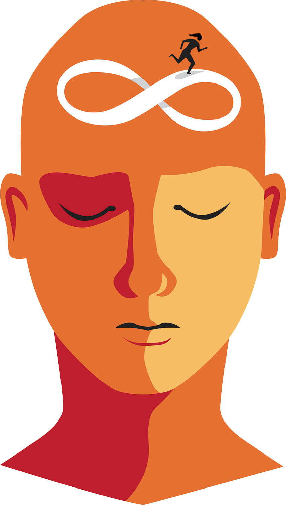

Some Things about my dreams are explained below
- Embarking on Dream Journeys: "I embark on the enchanting journeys within my dreams, where imagination knows no bounds. These nocturnal adventures fuel my creativity and illuminate the unexplored corners of my mind."
- Dreams as Stepping Stones:"For me, dreams are not mere ephemeral sequences; they are stepping stones leading to my aspirations. Each dream is a puzzle piece, guiding me toward the realization of my goals and ambitions."
- The Tapestry of Dreamscapes: "In the tapestry of my existence, dreams are woven into intricate patterns. They are the threads of inspiration that bind together the story of who I am and who I strive to become."
- Dreams Shaping Reality:"I see dreams as architects of my reality. They sketch the blueprint of my desires, and with dedication and resilience, I transform those dreams into tangible accomplishments."
- Dreams Unveiling Potential:"For me, dreams are like mirrors reflecting my latent potential. Exploring these dreamscapes is a continuous journey of self-discovery, unraveling layers of my capabilities and aspirations."
- Dreaming Boldly: "I'm an advocate for dreaming boldly. It's not just about wishful thinking; it's about setting audacious goals that stretch the boundaries of what I thought was possible."
- Dreams as Creative Muse:"My dreams are the muse for my creative endeavors. They whisper innovative ideas, paint vivid images, and provide the raw material for the stories I tell and the projects I undertake."
My Dreams
